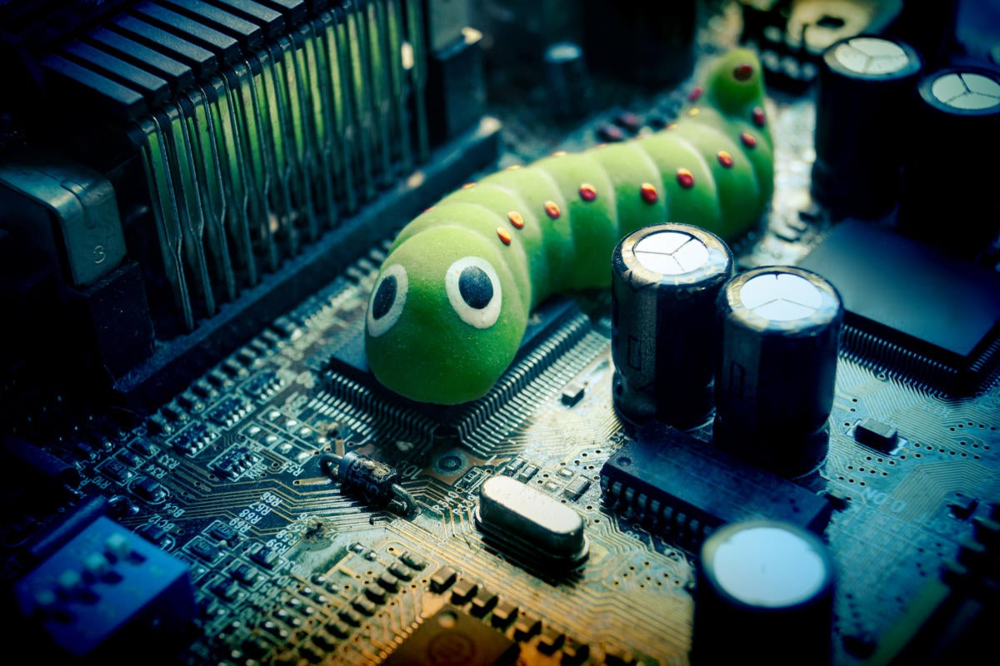
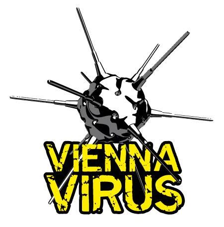
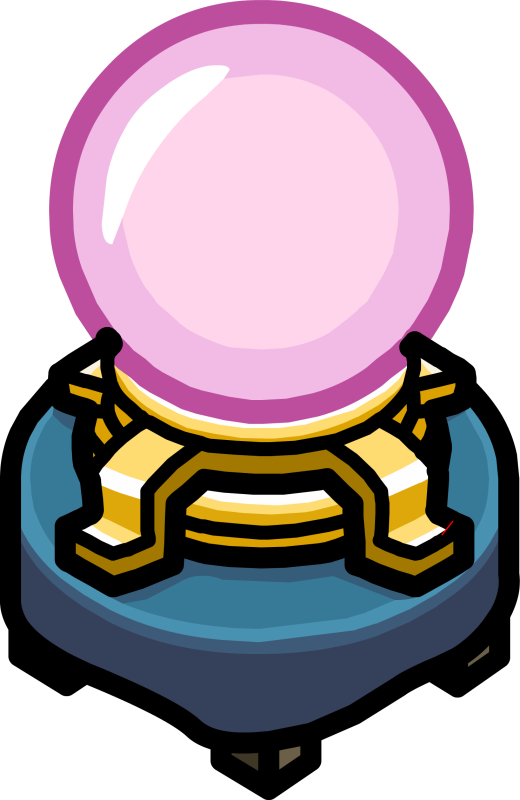

Historie
Skromné a složité začátky...
Spustíte mě prosím ? ...
Označení virus zavedl do počítačové terminologie poprvé ve své odborné přednášce výzkumný pracovník
Fred Cohen v roce 1984 (Experiments with Computer Viruses):
„Počítačový virus je počítačový program,
který může infikovat jiný počítačový program takovým způsobem, že do něj zkopíruje své tělo,
čímž se infikovaný program stává prostředkem pro další aktivaci viru.“
První skutečné viry pro počítače vznikaly pro MS-DOS v osmdesátých letech
minulého století. Protože v tehdejší době byl internet ještě takzvaně
„v plenkách“, šířily se tehdejší viry pomocí disket. Snaha těchto
virů proto byla, aby se dostaly na nějakou disketu a z ní byly pak
spuštěny v jiném počítači.
Některé viry se proto snažily „slušnou
metodou“ požádat o umožnění zápisu na disketu. Diskety se totiž daly
zamknout a byly tak fyzicky chráněny proti zápisu. Vzhledem k tehdejšímu
(ne)povědomí obsluhy byla naprostá většina žádostí kladně vyřízena.
Zajímavá byla i doba šíření virů: pokud měl virus štěstí, přesunul
se do několika měsíců do vedlejšího státu.
Časová Osa
-
Creeper: První "Worm" Creeper
1971
Není známo, kdo vytvořil první samoreplikační program na světě, ale je zřejmé, že první červ na světě, nazvaný Creeper system, vytvořil inženýr americké společnosti BBN Technologies - Robert Bob H. Thomas.
Šířil se mezi počítači DEC PDP-10 s operačním systémemTENEX prostřednictví >ARPANETu . Uživatelům zobrazoval hlášení: „I’m the Creeper: Catch me if you can “. -
Reaper: První Antivir
1971
K zneškodnění viru "Creeper" byl Vytvoře autonomní program "Reaper", který se stal vůbec prvním antivirem na světě. Stvořil ho Thomasův kolega Ray Tomlinson. Účelem bylo najít jakýkoli počítač infikovaný Creeperem a ten odstranit.
-
Použito označení "Vir"
1983
V roce 1983 sestrojil jistý Dr. Frederik Cohen samomnožící program, který začal označovat jako virus. značení virus zavedl do počítačové terminologie poprvé ve své odborné přednášce výzkumný pracovník Fred Cohen v roce 1984 (Experiments with Computer Viruses)
-
Brain: "Boot-vir" pro IBM PC
1986
V tomto roce se objevil vůbec první počítačový vir pro MS-DOS. Jmenoval se Brain a škodil tak, že přepisoval spouštěcí sektor počítače, což zabránilo v jeho spuštění. Napsán byl pákistánskými bratry Farúkovými. Původně byl navržen jako ochrana proti kopírování – softwarovému pirátství.
-

Vienna: Evropa v čele..
1987
V té době se počítače staly běžnějšími a lidé začali experimentovat a vytvářet v nich různé vylomeniny. Jedním z produktů tohoto věku byl ve středoevropském prostoru vir Vienna. Detekovali jej Miroslav Trnka a Peter Paško, kteří na něj vytvořili i antivir. Vienna vlastně stojí za vznikem společnosti ESET, kterou oba programátoři o několik let později založili.
-
AIDS: první ransomware
1989
Až do tohoto bodu viry existovaly především pro zábavu těch, kdo je vytvořili. Byly čistě koníčkem a myšlenka skutečného vydělávání peněz na škodlivém softwaru byla přinejlepším hypotetická. Joseph Popp toto v roce 1989 vydáním prvního ransomwaru s názvem AIDS změnil. Po instalaci AIDS začal počítat počet spuštění počítače. Jakmile se tak stalo 90x, zašifroval všechny soubory na úložišti, čímž je znepřístupnil, a požadoval od uživatelů zaslání částky 189 USD aby je znovu dešifroval.
Mellisa: sociální inženýrství
1992
Byl to první vir, který využíval sociální inženýrství. Distribuce prostřednictvím e-mailu znamenala, že se automaticky odesílal lidem z adresáře Outlooku. Počítačům to neublížilo, ale došlo k přetížení e-mailových systémů, které vir ucpal zbytečnými škodlivými zprávami. Melissu vypustil David L. Smith, který byl nakonec zadržen, přičemž si vysloužil 20 měsíců ve vězení a pokutu 5 000 dolarů.
I love you ! : nejničivější...
2000
Ve své době se jedním z nejznámějších a nejničivějších virů stal I Love You. Do počítače se dostal prostřednictvím přílohy e-mailu a poté mazal dokumenty, fotografie, hudební soubory, ale vyhledával i údaje o kreditních kartách. I Love You si po aktivaci stáhl trojského koně, který přepsal soubory a zneužíval uživatelská data jako přístupové údaje, IP adresy atd. Tento vir odhadem napadl 45 milionů počítačů po celém světě (asi 10 % všech připojených počítačů) a způsobil škodu přes 8 miliard dolarů.
Stuxnet : ten který zastavil Írán
2010
V roce 2010 se objevil počítačový červ Stuxnet, který měl za úkol kontrolovat průmyslové systémy. Červa objevila běloruská firma VirusBlokAda. Naprogramovaný byl tak, aby útočil na monitorovací systém SCADA. Infikování probíhalo přes přenosné USB zařízení, přičemž hlavním cílem úspěšného útoku červa byla íránská jaderná elektrárna. V nákaze nepomohl ani fakt, že systém byl zcela izolován od internetové sítě.
Wanna Cry : nejničivější ramsomware všech dob
2017
WannaCry byl ransomware, který napadal počítače se systémem Windows a později požadoval výkupné. Největší škody způsobil v Rusku, na Ukrajině, či Taiwanu. WannaCry se šířil nejprve jako infikovaná příloha prostřednictvím e-mailu. Po nakažení zašifroval data na pevném disku a požadoval 300 dolarů v Bitcoinu. Později se cena zvýšila na 2 000 dolarů. Odhaduje se, že WannaCry napadl přes 250 tisíc počítačů, přičemž měl obrovský dopad i na různé organizace a firmy.
A Budoucnost ?..
Věky budoucí
v roce 2006
V posledních několika letech pomyslné žezlo postupně přebírají další škodlivé kódy, označované jako spyware. Zdaleka však nejde o změnu revoluční, ale spíše o pozvolné prorůstání "stávající vládnoucí vrstvy s nově příchozími". Běžně se tak nyní můžeme setkat s e-mailovým červem, který za účelem špehování uživatele nasazuje do infikovaného systému různé keyloggery nebo v něm otevírá zadní vrátka. Zcela aktuálním trendem jsou pak škodlivé kódy typu "BOT", které z infikovaného počítače dělají poslušného vykonavatele příkazů vzdáleného útočníka tzv. "zombie". Takový počítač může být lehce zneužit k provádění DoS útoků nebo k šíření spamu či jiného nelegálního obsahu.
Dále škodlivé kódy na bázi tzv. nástrojů "rootkit" se dokáží zavrtat do operačního systému velmi hluboko a dokonale se tak skrýt nejen před zraky uživatele, ale také (a o to jim především jde) před zraky antivirového programu. Již dnes se na virové scéně začínají objevovat první vlaštovky.
Můžeme také počítat s nárůstem útoků pomocí Ransomwaru jelikož programátoři zjištují, že jim to vydělává...

{kind=link}
{kind=link}
{kind=link}
{kind=link}
{kind=link}